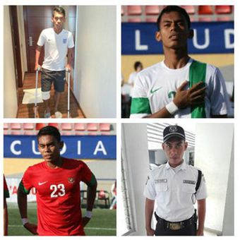

Cedera Parah Paksa Mantan Pemain Timnas Ini Jadi Satpam
Fachri Firmansyah
KabarKabur.com - 26/09/2017, 20:06 WIB

Foto Fachri Firmansyah yang beredar di media sosial beberapa waktu yang lalu.(FACEBOOK)
Sungguh tragis nasib Fachri Firmansyah. Mantan pemain Timnas U-21 Indonesia tersebut kini harus beralih profesi menjadi satpam setelah mengalami cedera parah.
Fachri merasa telah disia-siakan oleh PSSI. Ini yang membuat dia sempat membenci sepak bola dan sangat frustrasi.
Fachri sempat mengikuti seleksi Timnas U-19 di bawah asuhan Indra Sjafri bersama 30 pemain lainnya untuk menghadapi Piala AFF. Sayang, dia tidak lolos seleksi untuk bergabung bersama tim tersebut.
Meski demikian, peruntungan Fachri bagus ketika terpilih memperkuat Timnas U-21 untuk mengikuti turnamen COTIF di Spanyol. Ternyata petaka justru datang kepada mantan pemain Sriwjaya U-21 tersebut karena mengalami cedera ACL dalam ajang di Spanyol itu.
Melihat kondisi tersebut, Sriwijaya FC tak memperpanjang kontrak Fachri. Cedera parah tersebut juga menjadi akhir dari kariernya sebagai pesepak bola karena dia tak lagi mendapat kesempatan menjadi pemain timnas.
Seperti dikutip BolaSport.com dari Tribun-Timur.com, Fachri mengaku sempat mengalami tekanan batin. Bahkan dia kabarnya sempat membeci sepak bola, apalagi merasa tak diperhatikan PSSI pasca-cedera itu.
Untuk menenangkan diri, Fachri sempat mondok mendalami ilmu agama di Pondok Pesantren Attahdzib di daerah Rejoagung, Ngoro, Jombang. Setahun setelah mengalami tragedi tersebut, Fachri mulai berusaha untuk mencari pekerjaan di luar sepak bola.
Fachri awalnya bekerja sebagai seorang satpam, namun kemudian pindah kerja di kawasan di Rungkut Industri untuk menjadi kuli panggul LPG di Rungkut Industri. Bersama 12 teman lainnya, setiap hari mereka mengangkat LPG ke 20 truk.
Mantan pemain Sriwijaya FC U-21 lantas mencoba kembali melamar menjadi satpam. Dia sempat mengalami kendala saat menjalani tes fisik.
Anak tunggal dari pasangan Heri Purwoko dan Muryati ini kemudian diterima menjadi satpam yang bertugas menjaga bekas kantor milik pabrik rokok ternama asal Kediri. Fachri mengaku dengan gaji sebagai satpam sulit untuk bisa menjalani terapi memulihkan cedera.
penulis :Aloysius Gonsaga AE
sumber :BolaSport